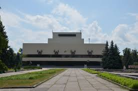
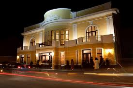
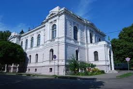
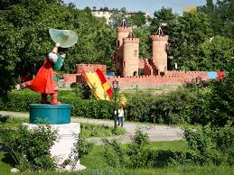
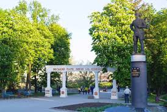
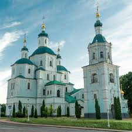
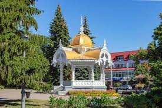
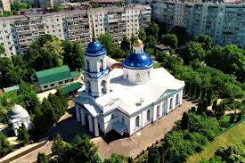
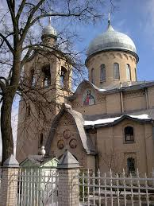

У Сумах працюють такі театри:
- Сумський національний академічний театр драми та музичної комедії імені М. С. Щепкіна (Театральна пл., 1);
 - Сумський театр для дітей та юнацтва (вул. Покровська, 6);
 - Сумська обласна філармонія (вул. Петропавлівська, 63);

Музеї
Найвідоміші сумські музеї й експозиції:
- Обласний краєзнавчий музей (вул. Герасима Кондратьєва, 2) — найбільше зібрання предметів історії та культури Сумщини;

- Обласний художній музей ім. Н. Онацького (Покровська пл., 1);
 - Муніципальна галерея («СМуГа», вул. Соборна, 27);
- Музей народної освіти області (Сумський педагогічний музей; просп. Свободи, 38);
- Будинок-музей А. П. Чехова (вул. Чехова, 79);

- Музей розвитку банківської справи на Сумщині та історії грошей (вул. Петропавлівська, 57);
- Музей історії альпінізму (вул. Миру, 24);
Бібліотеки
Відомі бібліотеки Сум:
- Обласна універсальна наукова бібліотека (вул. Героїв Сумщини, 10);

- Обласна бібліотека для дітей (вул. Петропавлівська, 51);
- Центральна міська бібліотека ім. Т. Г. Шевченка (вул. Нижньовоскресенська, 6);
- Бібліотека Конгрес-центру СумДУ (вул. Покровська, 9/1);
Бібліотеки працюють при освітніх, клубних і музейних закладах, зокрема значним бібліотечним закладом є Бібліотека Української академії банківської справи НБУ.
Парки
Дитячий парк «Казка»
Відкритий у 1985 році, до 40-ї річниці перемоги СРСР над Німеччиною у німецько-радянській війні. У парку є декілька атракціонів, озера, фортеці, різноманітні скульптури казкових персонажів.
Парк імені Івана Кожедуба
Центральному парку культури та відпочинку в місті Суми присвоєно ім'я Івана Кожедуба. При вході до парку встановлено пам'ятник Івану Кожедубу до 350-річчя міста у 2004 році. Парк розкинувся на березі річки Псел, у парку є атракціони, різноманітні скульптури. Також у парку розташований стадіон «Ювілейний».
Архітектурні й історико-культурні пам'ятки
Головними архітектурними пам'ятками Сум є:
- Воскресенська церква (XVIII століття, майдан Незалежності, 19);
 - Спасо-Преображенський собор (XVIII століття, вул. Соборна, 31-а);

- Альтанка;
 - Троїцький собор (XIX століття, вул. Троїцька, 34);

- Іллінська церква (XVIII століття, вул. Іллінська, 10/45);
 - Петропавлівська церква (XIX століття, вул. Сумської артбригади);

- Пантелеймонівська церква (поч. XX століття, вул. Роменська).
